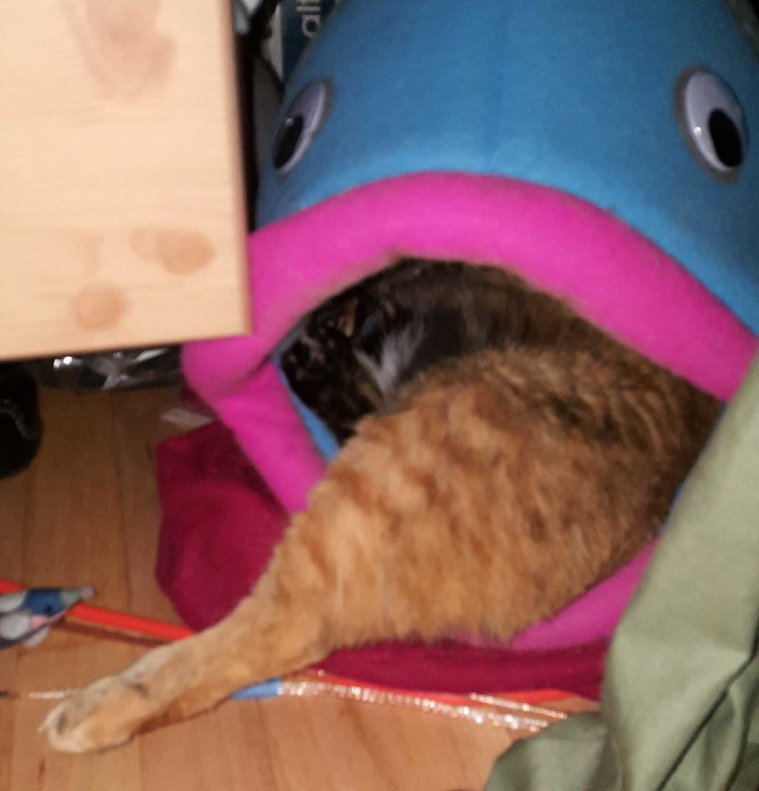

The Discovery

One evening, a cat was found in a garage in a small neighborhood on the Northside of Jefferson Park in Chicago Illinois.
The Acceptance

With the offering of food, she was easily taken into the home of the owners of the garage.
The Establishment

With the replenishing food, the cat, meow named Booger (due to the sickly condition she was in, and the havoc she wrecked in her day to day shenanigans) stuck around
The Growth

The unlimited supply of food and low levels of risk now meant that she could eat and then take the well-deserved nap after. However, this lack of activity had some negative consequences… weight gain. And a lot of it.
The Struggle
The weight gain caused a few struggles in Booger’s life. For one, the other animals in the house teased her. But the real struggle came with the size increase that is associated with weight gain. She doesn’t exactly fit where she once did. But as the old saying goes: “If it fits, it sits.”